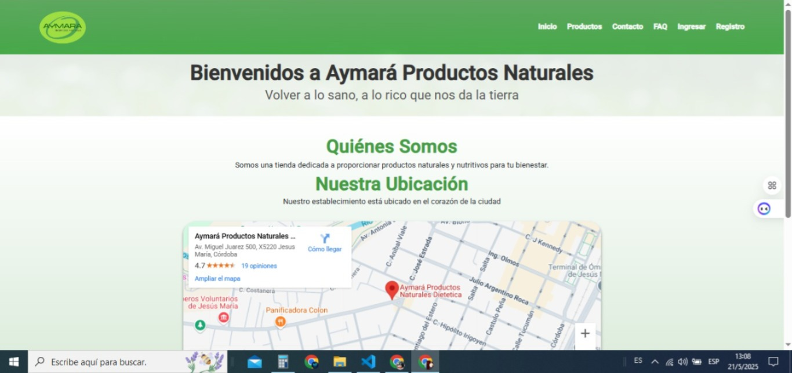
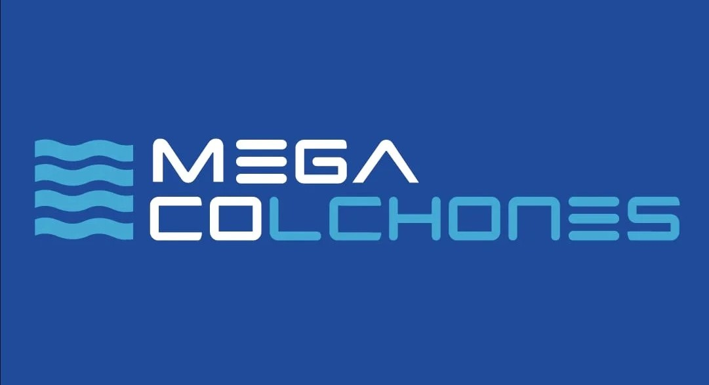
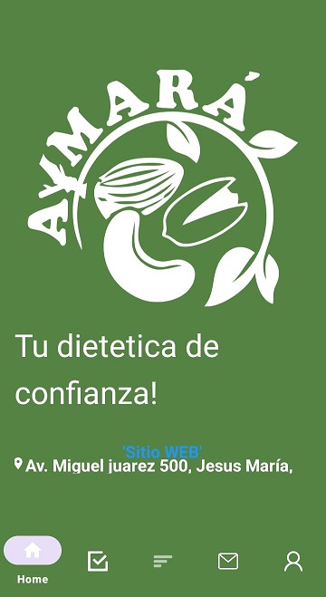
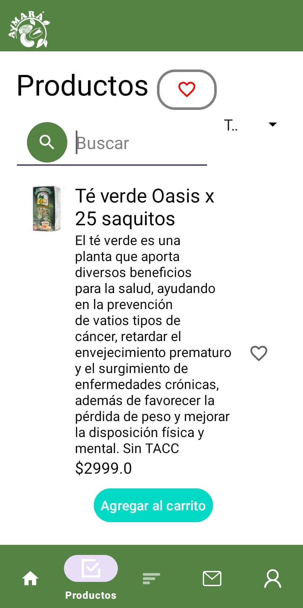

Somos un equipo apasionado por la tecnología y la innovación. Nos especializamos en ofrecer soluciones integrales para impulsar la transformación digital de tu negocio. Desde el desarrollo web y el diseño de experiencias digitales atractivas, hasta la implementación de soluciones IoT y estrategias de marketing digital efectivas, te acompañamos en cada paso del camino. Nuestra misión es ayudarte a aprovechar al máximo el potencial de la tecnología 4.0 para optimizar tus procesos, mejorar tu eficiencia y alcanzar tus objetivos de crecimiento. Nos enfocamos en entender tus necesidades y desafíos específicos, para ofrecerte soluciones personalizadas y adaptadas a tu realidad. Creemos en la colaboración y el trabajo en equipo. Nos esforzamos por construir relaciones sólidas y duraderas con nuestros clientes, basadas en la confianza, la transparencia y el compromiso.
Walter Daniel Camino
Fundador
Técnico Superior en Innovación Tecnológica 4.0
Desarrollador FullStack
Management en Administración
Damian Nicolas Figueroa
Co Fundador
Técnico Superior en Innovación Tecnológica 4.0
Desarrollador FullStack
Cecilia Edith Cogot
Co Fundadora
Técnico Superior en Logística
Desarrolladora FullStack
Nuestros Servicios
DESARROLLO WEB
Descripción:
Creamos sitios web y aplicaciones a medida, desde el diseño hasta la programación, para que tu negocio destaque en línea.
Aplicamos tecnologías 4.0 como IoT, dashboards de trazabilidad, automatización de inventarios y rutas inteligentes para reducir tiempos, costos y errores operativos.
Sitio web corporativo desarrollado para empresa de materiales de construcción, con catálogo de productos y sistema de cotizaciones en línea.

Web Aymará
Descripción:
Plataforma web para empresa gastronómica con sistema de reservas, menú digital y gestión de pedidos online.

Mega Colchones
Descripción:
Desarrollamos y ejecutamos la estrategia de redes sociales de Mega Colchones, creando contenido atractivo y gestionando la comunidad para aumentar su alcance, interacción y reconocimiento de marca.

Aymará App Android
Descripción:
Aplicación móvil nativa para Android con sistema de pedidos, seguimiento en tiempo real y pagos integrados.

Aymará App iOS
Descripción:
Versión iOS de la aplicación con interfaz optimizada y funcionalidades específicas para el ecosistema Apple.
Aymará Productos Naturales
Descripción:
Gestionamos su presencia en redes sociales con contenidos creativos y alineados a su identidad de marca, potenciando el alcance y la conexión con su comunidad de clientes interesados en productos saludables y naturales.
Logo Aymará
Descripción:
Optimizamos y modernizamos su identidad visual, actualizando el logo para transmitir frescura, naturalidad y coherencia con los valores de la marca.